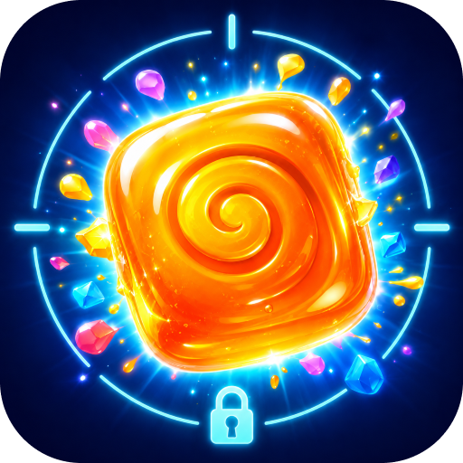
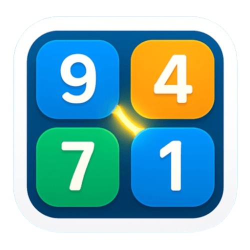
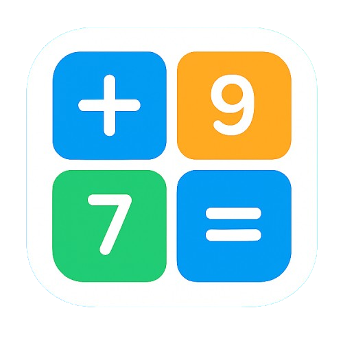
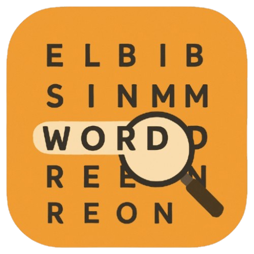

Lock & Launch
Fizik tabanlı atış sistemi ve zamanlamalı Smart Lock mekaniğini birleştiren mobil bulmaca oyunu.
- Hedefleme, ilerleme ve risk–ödül mekanikleri.
- GameAnalytics, reklam ve uygulama içi satın alma entegrasyonları.
Mobil oyunlar geliştiriyorum. Fikir aşamasından geliştirme, analitik, monetizasyon ve yayınlama süreçlerine kadar tüm üretim sürecini kendim yönetiyorum.
App Store ve Google Play’de yayınlanmış birden fazla oyunum bulunuyor. Bu süreçlerde oyun tasarımı, teknik geliştirme, performans optimizasyonu, oyun analitiği ve mağaza yayın süreçleri üzerinde çalışıyorum.
Ayrıca TÜBİTAK 2209-A kapsamında desteklenen projemde yapay zekâ destekli bir karar destek sistemi geliştirdim ve veri analizi ile tahmine dayalı modelleme süreçlerinde çalıştım
Unity & C# iOS & Android Python
01 / Projeler
Geliştirdiğim ve iOS ile Android için yayınladığım seçili oyunlar.

Fizik tabanlı atış sistemi ve zamanlamalı Smart Lock mekaniğini birleştiren mobil bulmaca oyunu.

Okunabilir oyun tahtaları ve kısa oyun oturumları üzerine kurulu sayı eşleştirme oyunu.

Kısa ve odaklı oyun oturumları için tasarladığım, sayı toplamına dayalı mobil bulmaca oyunu.

Kompakt harf tablolarında gizli kelimeleri bulmaya dayalı, iOS ve Android için geliştirdiğim kelime oyunu.
02 / Yazılım & araştırma
İş süreçleri, veri analizi ve karar destek sistemleri üzerine projelerim.
SAP süreçlerinden esinlenerek üretim planlama, stok, satın alma ve kalite akışlarını bir araya getiren modüler bir ERP prototipi geliştirdim.
MRP, ürün ağacı, kapasite planlama, ATP ve FEFO süreçlerini modelledim.
Semptom verilerinden tahmine dayalı sonuçlar üreten, yapay zekâ destekli bir karar destek uygulaması geliştirdim.
TÜBİTAK 2209-A destekli projede veri analizi, tahmine dayalı modelleme ve web uygulaması geliştirme üzerine çalıştım.
03 / Yetenekler
Projelerimde doğrudan kullandığım teknolojiler ve çalışma alanları.
Unity ve C# ile oyun mekanikleri, ilerleme sistemleri ve mobil performans optimizasyonu. Object pooling, ScriptableObject ve özel Unity Editor araçları.
GameAnalytics, Unity LevelPlay, AdMob ve uygulama içi satın alma. iOS ve Android için test, yerelleştirme ve mağaza yayın süreçleri.
SAP S/4HANA Cloud deneyimi; MRP, ürün ağacı, üretim ve kapasite planlama, stok ve satın alma süreçleri. İş akışı analizi ve süreç modelleme.
Python, SQL, Flask, React ve REST API ile uygulama geliştirme. Excel, veri analizi, makine öğrenmesi ve tahmine dayalı modelleme.
04 / Hakkımda
Sakarya Üniversitesi Bilişim Sistemleri Mühendisliği bölümünden 2026 yılında mezun oldum. Bağımsız olarak mobil oyunlar geliştiriyor, yazılım ve veri odaklı projeler üzerinde çalışıyorum.
Kion Bilişim’deki yazılım stajımda API ve veritabanı süreçlerinde; Sancak Inflight Service’deki planlama stajımda SAP S/4HANA Cloud kullanılan iş akışları ve operasyonel süreçlerde deneyim kazandım.
05 / İletişim
Proje, iş fırsatı veya oyun sohbeti için bana yazabilirsin.
ahmetemincansizoglu@gmail.com